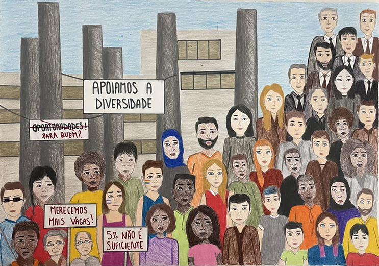
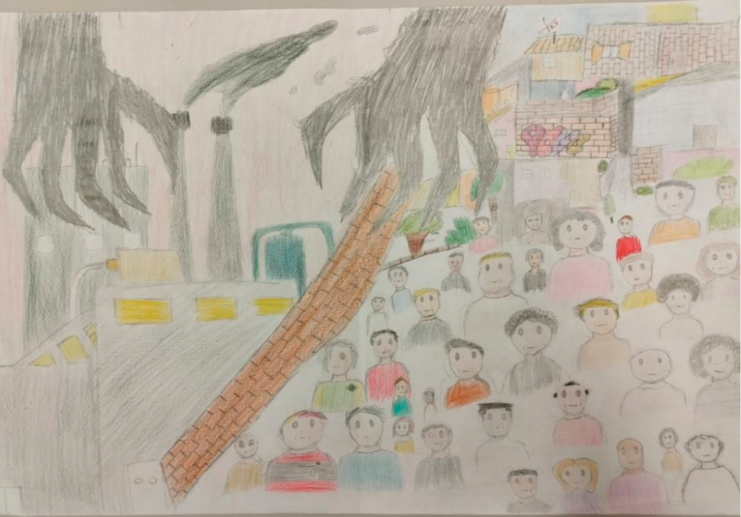

RELEITURAS
Jovens Artistas Criam Relação Entre Arte e Realidade nas Releituras de 'Operários' de Tarsila do Amaral
Nos traços e cores de uma nova geração de artistas, a icônica obra 'Operários', de Tarsila do Amaral, ganha vida novamente. Inspirados pelo legado da artista modernista brasileira, jovens talentos estão trazendo à tona as complexidades do mundo do trabalho contemporâneo, um cenário que ecoa as lutas e desafios enfrentados por diversas minorias na busca por oportunidades.
As releituras de 'Operários' que emergem desses artistas oferecem uma perspectiva contemporânea sobre a realidade dos trabalhadores, destacando as dificuldades que muitos enfrentam para ingressar e progredir no mundo do trabalho. Esses jovens artistas, através de suas obras, buscam conscientizar a sociedade sobre as questões prementes que afetam os mais vulneráveis em nossa sociedade.
Em um momento em que as discussões sobre equidade de gênero, inclusão racial e igualdade de oportunidades no mercado de trabalho estão no centro das atenções, as releituras de 'Operários' de Tarsila do Amaral servem como um lembrete vívido de que a arte pode ser um veículo poderoso para a reflexão social.
Nas novas representações da obra, os jovens artistas não se limitam a retratar as condições de trabalho, mas também exploram as barreiras enfrentadas por minorias em diferentes contextos. Eles dão voz às experiências de mulheres, pessoas negras, LGBTQ+ e outras comunidades marginalizadas, cujo acesso ao mercado de trabalho muitas vezes é obstruído por preconceitos e desigualdades sistêmicas.
Assim como Tarsila do Amaral desafiou as convenções de seu tempo ao retratar os trabalhadores rurais em 'Operários', esses jovens artistas estão desafiando as normas contemporâneas ao ampliar o foco da obra original para abranger uma variedade de vozes e histórias. Suas obras não apenas criticam as dificuldades enfrentadas por essas minorias, mas também celebram sua resiliência e determinação em superar obstáculos.
Em um mundo em constante transformação, onde a diversidade é uma força a ser reconhecida e valorizada, as releituras de 'Operários' de Tarsila do Amaral oferecem uma oportunidade única de reflexão sobre como podemos construir um futuro mais inclusivo e igualitário para todos os trabalhadores, independentemente de sua origem, identidade ou circunstâncias. Esses jovens artistas não apenas honram o legado da grande Tarsila, mas também contribuem para moldar um diálogo mais amplo sobre justiça social e oportunidades iguais no mundo do trabalho. Suas obras são um lembrete inspirador de que a arte pode ser uma força motriz para a mudança e a conscientização em nossa sociedade em constante evolução.
Ao incentivar seus alunos a refletirem sobre as questões relacionadas às minorias no ambiente laboral, a instituição Senac São Leopoldo promove uma visão mais inclusiva e justa da sociedade. Estimulando a criatividade para fazer uma releitura de obras importantes, a escola contribui para a preservação e renovação da rica história do Brasil. Essa abordagem educacional não apenas prepara os estudantes para os desafios do mercado, mas também os capacita a serem agentes de mudança em uma sociedade em constante evolução.
Maria Eduarda
A releitura da obra “Operários” de Tarsila do Amaral, foi desenvolvida a partir das minorias no mercado de trabalho atual — "Pesquisa Mostra Que Minorias Não Chegam A 10% Do Quadro De Colaboradores Nas Empresas" (G1) A notícia abrange temas como negros, LGBTQIA+ e PCD’s enfrentando dificuldades para serem inseridos no mercado de trabalho, além de serem considerados minorias dentro do ambiente de trabalho.
Na minha releitura, as pessoas a esquerda, estão representando as minorias citadas acima, com cartazes pedindo mais direitos relacionados ao mundo do trabalho, já a direita, são representadas pessoas privilegiadas dentro do mundo trabalhista. O trabalho foi desenvolvido dessa maneira para retratar as diferenças enfrentadas por pessoas consideradas minorias.
Lara Baum.
O trabalho foi desenvolvido a partir da notícia Menos de 5% dos trabalhadores negros têm cargos de gerência ou diretoria, aponta pesquisa do g1. A notícia fala sobre a falta de inclusão, principalmente de pessoas negras nas empresas e a falta delas nos cargos mais altos, que é de 5%, segundo o levantamento da Vagas.com.
Na minha releitura, me inspirei muito na obra “Operários” de Tarsila do Amaral e sua estrutura, trazendo elementos e questões sociais atuais e relacionadas à notícia escolhida. No canto inferior esquerdo representei diversas minorias e a diversidade, que estão usando roupas mais coloridas, representando a liberdade de expressão, e manifestando-se contra a empresa que está no fundo, com placas como “Merecemos mais vagas” e “5% não é suficiente”, de acordo com a notícia. Enquanto isso, a empresa mantém placas de “Apoiamos a diversidade” e “Oportunidades!”, que está riscada e pichada com a pergunta “Para quem?”. Ao longo da pirâmide de pessoas, representei os trabalhadores da empresa, diminuindo a diversidade e utilizando mais cores neutras. No topo da pirâmide, que seriam os cargos mais altos, estão representados na maioria homens brancos, que na nossa realidade atual, fazem parte da maioria no topo dos cargos.
Arthur Cardoso
"O processo criativo que eu tive para fazer essa releitura veio bem do nada. Eu não estava com nenhuma ideia até que me veio na cabeça sobre pelo menos o tema central: as minorias moradoras de comunidades. Gosto de falar sobre esse assunto, pois estudo bastante sobre este tema, visto minha curiosidade desde mais novo sobre a vida nas favelas, vilas e comunidades mais humildes.
Então juntando inspirações de filmes, principalmente nacionais (que diga-se de passagem, sou apaixonado pelo cinema nacional) com relatos de vários documentários que eu já havia assistido sobre o assunto, eu comecei a elaborar os elementos visuais que teriam na minha releitura, para passar a mensagem que eu gostaria por meio do desenho. Obviamente, sempre cuidando para que não houvesse tanta modificação assim na obra para não perder o foco da releitura, mas eu pude ser ousado em adicionar elementos que não estão inclusos na obra original da Tarsila, que com certeza fazem muita ligação direta e indireta com a notícia na qual me inspirei (Jovens moradores de comunidade têm dificuldade de se destacar profissionalmente).
O elemento que mais se destaca provavelmente são as garras no céu, escuras e sem rosto. Quis representar o sistema opressor de, não só estas, como de todas as minorias que almejam qualidade de vida para elas. As garras tentam ofuscar o brilho da comunidade, mas ela se mantém colorida, unida, diferente do outro lado, que por mais que não exista uma divisão física que separa a comunidade do mundo do trabalho, está sendo representada por um muro, pois é o que parece. O sistema tira direitos da comunidade, tira infraestrutura, oportunidades, veem as comunidades com maus olhares, talvez porque muitos dos moradores são alcançados pelo caminho mais “fácil” rapidamente, justamente por não conseguirem oportunidades de trabalho dignas. E o que eu quero dizer com isso? Crime!
E foi por isso que eu representei minha releitura dessa forma. A comunidade pode até estar com olhar de mil jardas, mas ela continua forte dentro dela, os moradores se viram como ninguém e só buscam uma coisa: igualdade, querem ser vistos, e eu quero ajudar a dar visibilidade para a comunidade."
